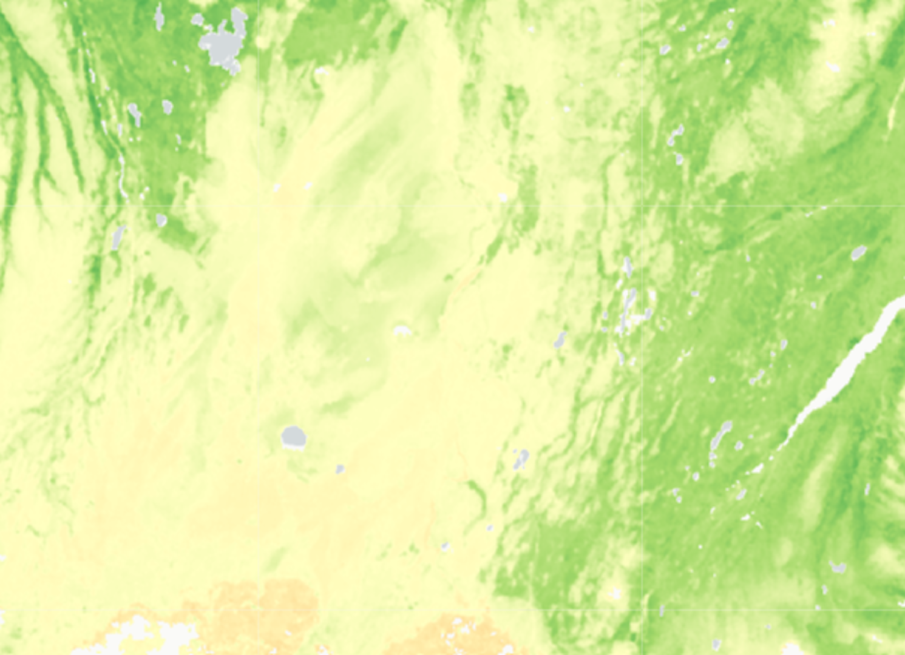

Built · NDVI
Median Normalized Difference Vegetation Index (NDVI)
- Region Europe
- Period 2000 - 2020
- Time step Annual
- Resolution 250x250m
- Surfaces 3

Details
- Category
- Built
- Theme
- NDVI
- File type
- TIF
- Temporal resolution
- Annual
- Time period
- 2000 - 2020
- Frequency
- Every 5 years
- Spatial resolution
- 250x250m
- Extent
- Full EU
- Unit
- index
- CRS
- ETRS89-extended / LAEA Europe (EPSG: 3035)
- No-data value
- -3.40E+38
- Owner
- Kees de Hoogh
- Source project
- EXPANSE (EXposome Powered tools for healthy living in urbAN SEttings)
- Metadata last updated
- 6-2-2026
- Dataset last revised
- 8-1-2026
Surfaces
Each surface is a separate data layer of this dataset.
Methodology
NDVI quantifies photosynthetically active vegetation by measuring the difference between near-infrared (which vegetation strongly reflects) and red light (which vegetation absorbs). NDVI values range from +1.0 to -1.0. Areas of barren rock, sand, or snow usually show very low NDVI values (for example, 0.1 or less). Sparse vegetation such as shrubs and grasslands or senescing crops may result in moderate NDVI values (approximately 0.2 to 0.5). High NDVI values (approximately 0.6 to 0.9) correspond to dense vegetation such as that found in temperate and tropical forests or crops at their peak growth stage. Negative values of NDVI (values approaching -1) correspond mainly to water and ice and snow cover.
NDVI was derived from the Vegetation Indices (MOD13Q1) product of the Terra Moderate Resolution Imaging Spectroradiometer (MODIS) with 250 m x 250 m resolution (K. Didan, 2015). MOD13Q1 16-day composite vegetation indices provide one NDVI value every 16 days allowing the composition of gap-free temporal-series. The per-pixel compositing algorithm is described in the MOD13Q1 product user guide [1]. The MOD13Q1 product includes the following relevant bands, among others: a) NDVI and b) quality assessment (QA) information. More information can be found elsewhere [2]. Per-pixel Quality Assessment (QA) band provides information about how reliable the acquired data is and allows for removal of pixels with less accuracies. QA values of 0 and 1 mean a good quality level, whereas values of 2 and 3 represent pixels covered by ice, snow or clouds, which are discarded. Water features have typically negative signal values for NDVI, so they add noise to the negative edge when conducting spatial analysis. In order to identify and remove the influence of water bodies in the analysis, the Land Water Mask derived from MODIS and SRTM (MOD44W) were used to filter out the water bodies from the NDVI maps [3].
The data processing strategy included the following steps:
- All MOD13Q1 imagery within a year was loaded and processed using Google Earth Engine
- Processed imagery was clipped to the defined study area within the project
- Quality assessment (QA) information was applied to obtain good quality data
- Water bodies were masked out, using MOD44W
- Selected statistics were calculated
References
- Didan, Kamel, Barreto Munoz, A., Solano, R., & Huete, A. (2015). MODIS Vegetation Index User’s Guide (MOD13 Series). http://vip.arizona.edu.
- https://lpdaac.usgs.gov/products/mod13q1v006/
- Carroll, M. L., DiMiceli, C. M., Townshend, J. R. G., Sohlberg, R. A., Elders, A. I., Devadiga, S., Sayer, A. M., & Levy, R. C. (2017). Development of an operational land water mask for MODIS Collection 6, and influence on downstream data products. International Journal of Digital Earth, 10(2), 207–218. https://doi.org/10.1080/17538947.2016.1232756
Data access
To request access, complete the data access request form and send it to expanse@uu.nl. Requests are assessed under the Data Access and Publication Policy.